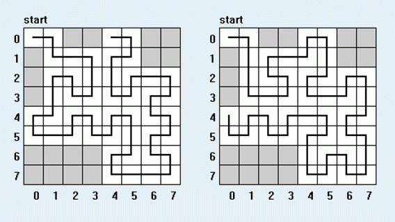

BZPRO
#2524. [Poi1997]Rek 蚂蚁的递归访问
内存限制：128 MiB
时间限制：1 Sec
提交
提交记录
讨论
题目描述
给定一个边长为2
n
棋盘，其中有M个格子是坏掉的。一个蚂蚁要从棋盘的左上角开始，遍历整个棋盘。每个点必须且仅允许走一遍。蚂蚁走的时候把棋盘分成了四个2
n-1
个小棋盘，蚂蚁总是走完其中的一个后再继续走下一个，也就是说，在进入一个小棋盘后，它必须把其中的所有点遍历以后才能走其他的点。

对于上下左右四个边界，寻找边界上的一个格子，使得该格可以作为蚂蚁访问路线的终点
其中
N <= 30 , M <= 50
输入格式
输出格式
样例
样例输入
3
17
2 0
1 0
3 0
6 0
7 0
6 1
7 1
6 2
7 2
6 3
7 3
0 2
0 3
0 6
0 7
1 6
1 7
样例输出
NIE
NIE
NIE
NIE
数据范围与提示